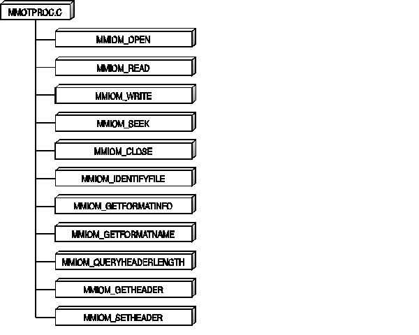

The following figure illustrates the messages supported by the M-Motion I/O procedure (MMOTTK.DLL). Following the figure are descriptions and code examples of the messages file format I/O procedures must support.